JEPA-WM project · 16 October 2026 · Evidence from existing saved runs
When the goal image says more than the task
A visual guide to the pipeline, real simulator scenes, measured feature costs, and the experiments completed so far.
Scientific status: goal-image sensitivity is established on drawer-close. Ungated goal averaging improves some drawer cases but fails its general-method tests. This gallery does not present a validated new method.
Push-T animation replays saved plans and exactly matches their recorded final states. Metaworld animations cycle actual counterfactual goal renders; they are not time rollouts. DINO heatmaps show feature-MSE contributions, not attention or causal saliency.
Project overview
The project's existing planner, interventions, established goal-image failure, and unresolved method question.
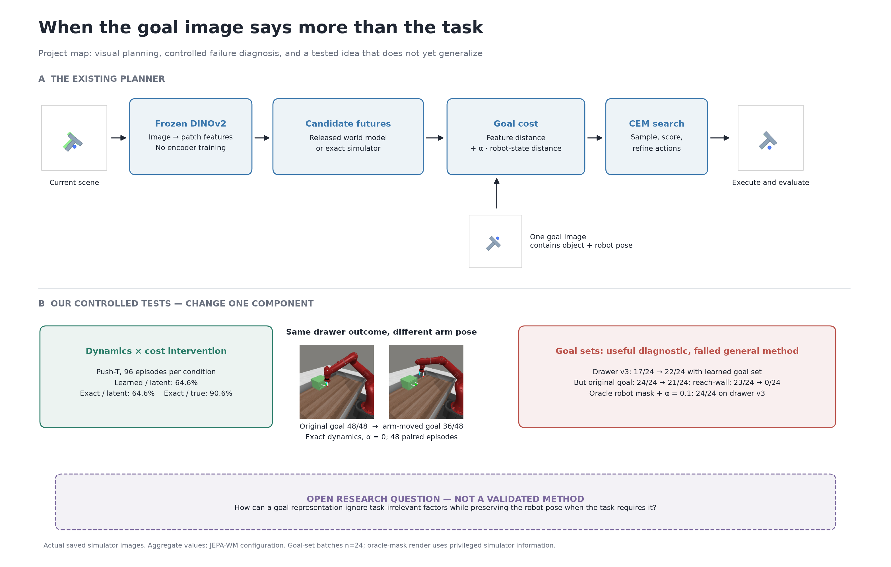
Sources and interpretation
docs/07_RESTART_LOG.mdartifacts/raw_logs/pusht_failure_attribution/jepa_wm/ep_002.npz
How the tested goal-set idea works
Mechanistic diagram of the frozen-model goal-set experiment, with failed gate and no-harm controls explicitly marked.
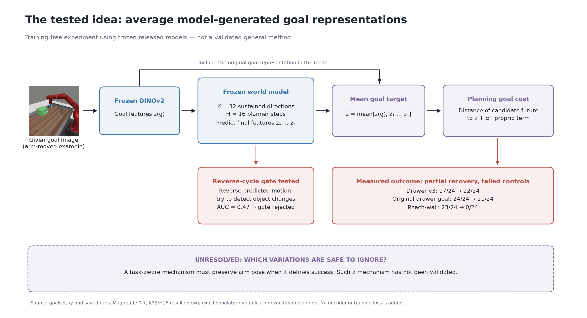
Sources and interpretation
code/jepa-wms/evals/failure_attribution/goalset.pydocs/07_RESTART_LOG.md
Push-T: genuine saved-plan replay
Genuine simulator replay of saved JEPA-WM, exact/latent and exact/true plans; selected illustrative failure episode 002, not a representative success-rate estimate.
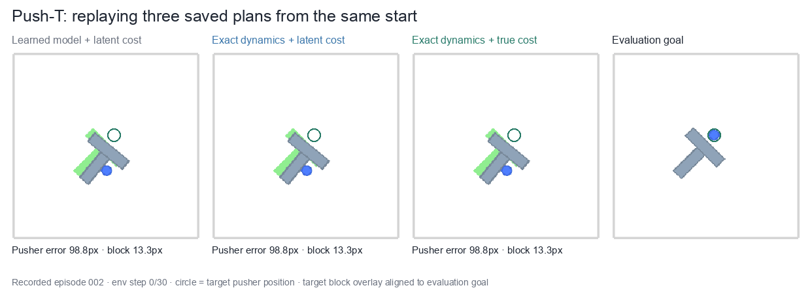
Sources and interpretation
Target block overlay is aligned to evaluation goal; physics is unchanged.
source_data/pusht_episode.npzsource_data/replay_validation.json
Drawer-close: equivalent goals
Real simulator goal images used in the drawer equivalence test.
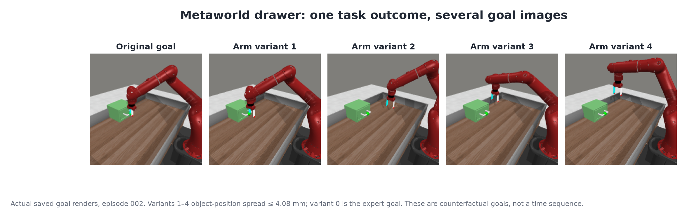
Sources and interpretation
source_data/drawer_offline_episode.npz
Drawer: measured DINOv2 patch costs
Measured patch-feature discrepancy for one fixed scene and two task-equivalent goals; each task uses its own shared color scale.
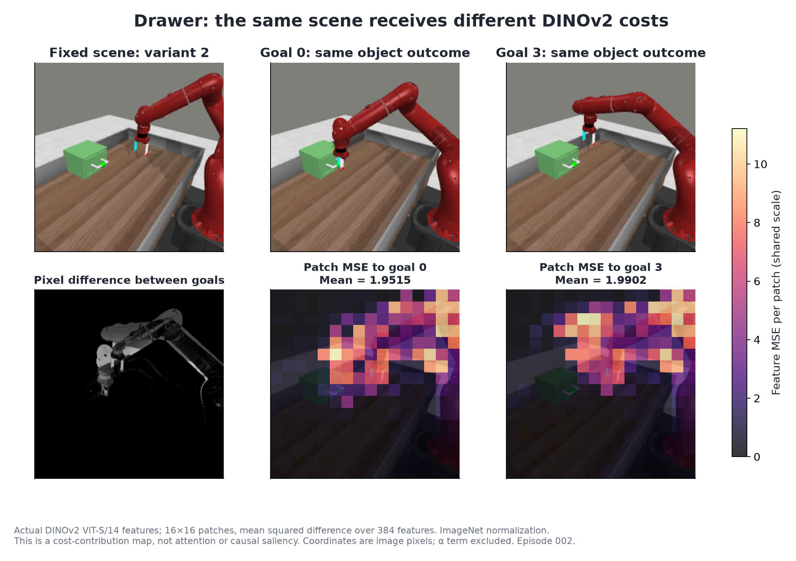
Sources and interpretation
source_data/drawer_dino_maps.npz
Metaworld push: equivalent goals
Real simulator goal images used in the push equivalence test.
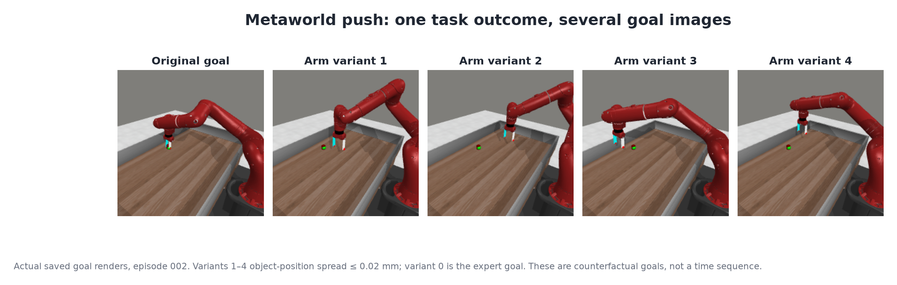
Sources and interpretation
source_data/push_offline_episode.npz
Push: measured DINOv2 patch costs
Measured patch-feature discrepancy for one fixed scene and two task-equivalent goals; each task uses its own shared color scale.
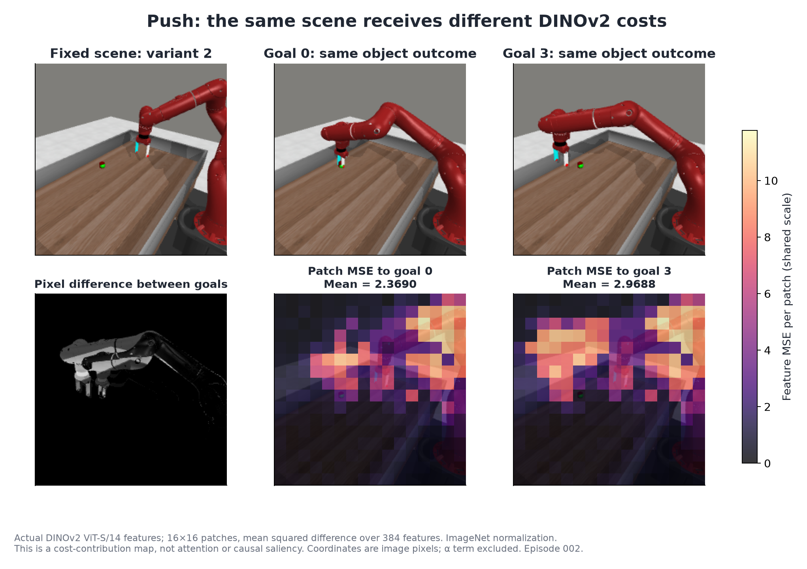
Sources and interpretation
source_data/push_dino_maps.npz
Drawer goal-variation animation
Actual saved counterfactual goal frames, explicitly not a temporal rollout.
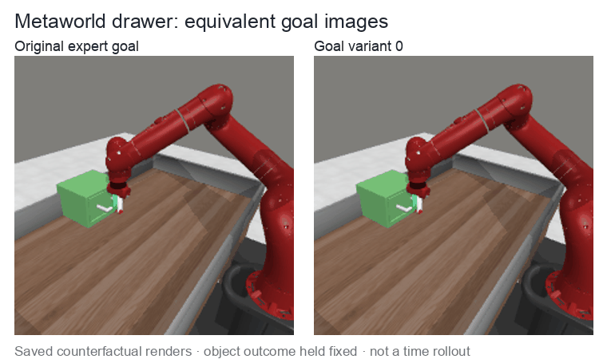
Sources and interpretation
source_data/drawer_offline_episode.npz
Push goal-variation animation
Actual saved counterfactual goal frames, explicitly not a temporal rollout.
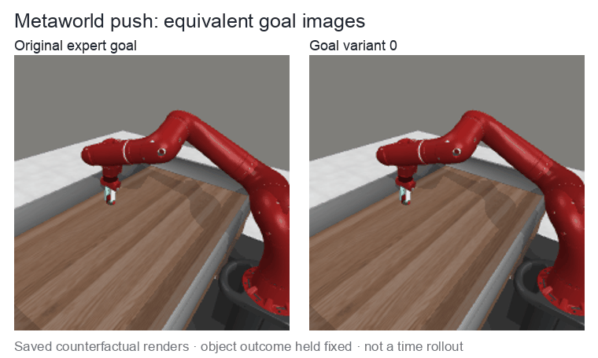
Sources and interpretation
source_data/push_offline_episode.npz
Where planning fails
Success ladders under controlled dynamics and cost replacements; search budget held fixed.
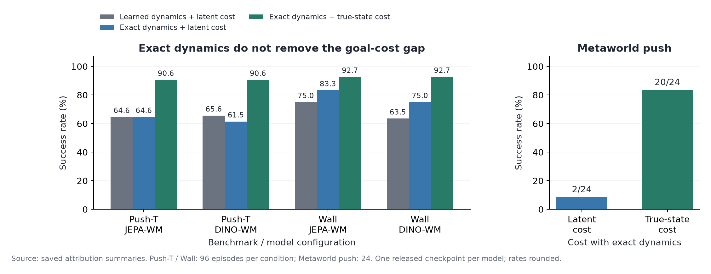
Sources and interpretation
docs/01_ASSESSMENT.mdresults/jepa_wms
Paired outcomes for goal averaging
Paired outcomes show drawer recovery and original-goal regressions; oracle masking is a stronger drawer baseline.
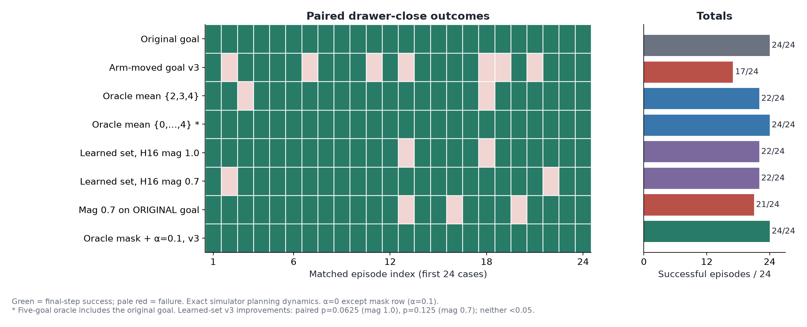
Sources and interpretation
artifacts/raw_logs/pod_runs/podA/drawer_alpha0/v0artifacts/raw_logs/pod_runs/podA/drawer_alpha0/v3artifacts/raw_logs/pod_runs/podA/drawer_alpha0/orbit_234artifacts/raw_logs/pod_runs/podA/drawer_alpha0/orbit_01234artifacts/raw_logs/pod_runs/podB/drawer_alpha0/wmset_h16k32_v3artifacts/raw_logs/pod_runs/podB/drawer_alpha0/wmset_h16k32m07_v3artifacts/raw_logs/pod_runs/podB/drawer_alpha0/wmset_h16k32m07_v0artifacts/raw_logs/pod_runs/podA/mask_baselines/drawer_v3_robotfree_a01
Why the tested goal-set idea fails
No-harm and arm-relevance controls explain why ungated goal averaging is not a validated general method.
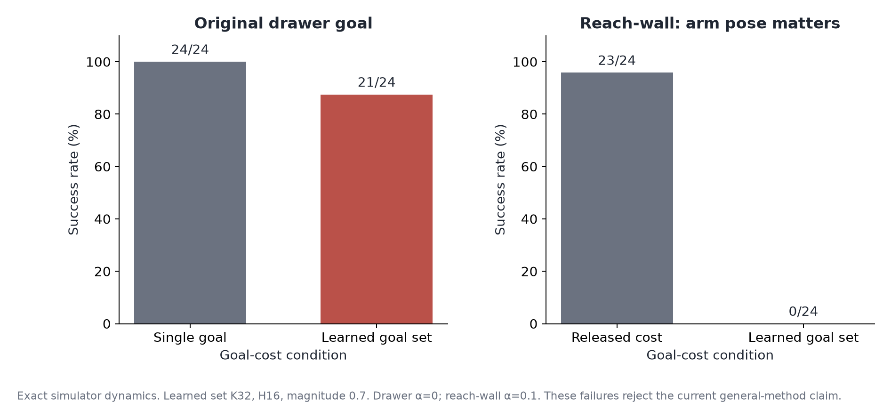
Sources and interpretation
Same futures, different goal rankings
One saved episode illustrates changed candidate preferences under task-equivalent goals.
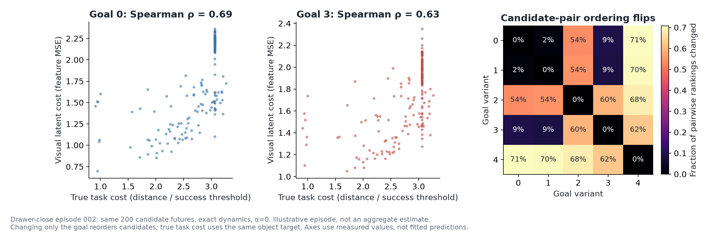
Sources and interpretation
source_data/drawer_offline_episode.npz